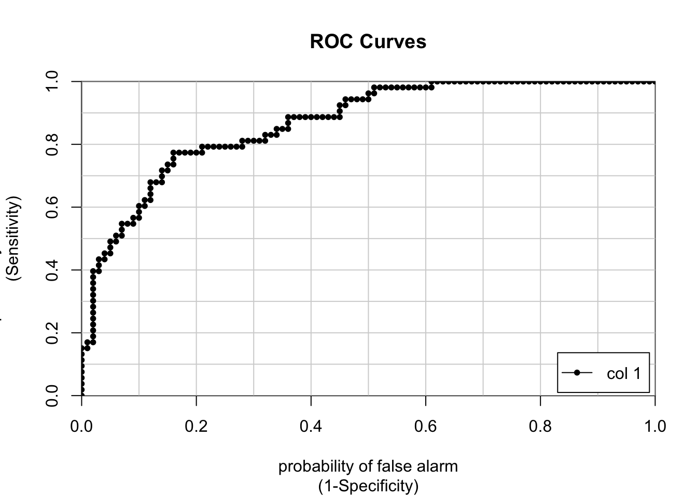

Chapter 7 Classification Example
Now that we’ve got an idea about how we might judge the performance quality of classification problem let’s look at the mechanics of implementing a classification model using the caret package. We’ve already seen it in action on a regression problem where we were predicting the MPG for the mtcars data frame.
We’ll be sticking with the Pima Indians dataset. In case you have forgotten, here are the variables in the data frame
pregnant - Number of times pregnant
glucose - Plasma glucose concentration (glucose tolerance test)
pressure - Diastolic blood pressure (mm Hg)
triceps - Triceps skin fold thickness (mm)
insulin - 2-Hour serum insulin (mu U/ml)
mass - Body mass index (weight in kg/(height in m)\^2)
pedigree - Diabetes pedigree function
age - Age (years)
diabetes - Class variable (test for diabetes)url <- "https://raw.githubusercontent.com/steviep42/bios534_spring_2020/master/data/pima.csv"
pm <- read.csv(url) So let’s look at some exploratory plots to see if there is anything interesting happening. We’ll use the Data Explorer package to help us with this although both R and Python have various packages to help with this kind of thing.
7.1 Exploratory Plots
We’ll look use some stock plots from the DataExplorer package to get a feel for the data. Look at correlations between the variables to see if any are strongly correlated with the variable we wish to predict or any other variables. Let’s start out with the plot_intro function which can provide an overview of our data. It turns out that our data is pretty clean. There are no rows with missing values and we have only one categorical feature.
Let’s see if there are any string correlations we need to be aware of.

There are more diabetes “negative” people than “positive”.

The histograms help us see what variables might be normally distributed although most of our features are skewed which makes sense in this case. For example, as people age, they tend to die so it’s not surprising that we have by far more young people. It looks to me that the insulin data is a little odd and might warrant greater consideration.

This plot will show us side by side boxplots of the features as a function of “pos” or “neg”. This is helpful to determine if, for example, there might be significant differences between glucose levels across the positive and negative groups. It makes sense that there might be. Insulin might be also although it’s not totally apparent from the following graph. This is the kind of thing you would do to zone in on important variables.

This plot will help us see if any of our features are normally distributed:

It turns out that Data Explorer will help us create a detailed report involving all of these plot tops.
At this point we know that we want to predict “diabetes” and that perhaps glucose is an important variables in the data. We also don’t observe many strong correlations in the data so multicollinearity isn’t a concern. We also don’t see strong evidence in the PCA plot that the data would benefit from a PCA transformation. One thing that we might consider doing is scaling the data since the features do not share the same measurement scale. We’ll take this into consideration.
7.2 Generalized Linear Models
Let’s pick a technique to model the data with the ultimate goal of being able to predict whether someone has diabetes or not. We’ll start with the glm function in R. We’ll take a kitchen sink approach where we predict the diabetes variable (“yes” or “no”) based on the rest of the information in the data frame.
## Resample1
## [1,] 1
## [2,] 3
## [3,] 4
## [4,] 6
## [5,] 7
## [6,] 8## [1] 615## [1] 153If we used the non caret approach we might do something like the following:
pm_model_glm <- glm(diabetes ~ .,
data = train,
family="binomial")
pm_model_fitpreds <- predict(pm_model_glm,test,
type="response")
fitpredt <- function(t) ifelse(pm_model_fitpreds > t , "pos","neg")
fitpreds <- factor(fitpredt(.4),level=levels(test$diabetes))
caret::confusionMatrix(fitpreds,
test$diabetes,
positive="pos")## Confusion Matrix and Statistics
##
## Reference
## Prediction neg pos
## neg 85 17
## pos 15 36
##
## Accuracy : 0.7908
## 95% CI : (0.7178, 0.8523)
## No Information Rate : 0.6536
## P-Value [Acc > NIR] : 0.0001499
##
## Kappa : 0.534
##
## Mcnemar's Test P-Value : 0.8596838
##
## Sensitivity : 0.6792
## Specificity : 0.8500
## Pos Pred Value : 0.7059
## Neg Pred Value : 0.8333
## Prevalence : 0.3464
## Detection Rate : 0.2353
## Detection Prevalence : 0.3333
## Balanced Accuracy : 0.7646
##
## 'Positive' Class : pos
## And if you haven’t yet enough of ROC curves just yet, we could put up one of those.

## [,1]
## neg vs. pos 0.8924528But wait, we’ve already been through the whole ROC curve, AUC, confusion matrix route so why would we take a manual approach if we have the caret package readily available ?
We can explore any number methods, implement K Fold Cross Validation,and get feedback on the performance measures all at the same time. Let’s reframe our above work using the caret package conveniences.
We’ve seen this before in the regression section so we’ll dive right in with a realistic example. We want to use Cross Fold validation here. We’ll select a metric of “Accuracy” and process the data by centering and scaling it since we have data on different measure scales.
ctrl <- trainControl(method = "cv",
number = 5)
pm_glm_mod <- train(form = diabetes ~ .,
data = train,
trControl = ctrl,
metric = "Accuracy",
method = "glm",
family = "binomial",
preProc = c("center", "scale"))
pm_glm_mod## Generalized Linear Model
##
## 615 samples
## 8 predictor
## 2 classes: 'neg', 'pos'
##
## Pre-processing: centered (8), scaled (8)
## Resampling: Cross-Validated (5 fold)
## Summary of sample sizes: 492, 492, 492, 492, 492
## Resampling results:
##
## Accuracy Kappa
## 0.7642276 0.4521906## parameter Accuracy Kappa AccuracySD KappaSD
## 1 none 0.7642276 0.4521906 0.01991455 0.05311404So we get an estimate of a 77% accuracy rate when the model is applied to out of sample data. This isn’t so impressive but we aren’t here to solve that problem (at least not just yet). So let’s make some predictions use thing test data to see what the Accuracy rate is.
## Confusion Matrix and Statistics
##
## Reference
## Prediction neg pos
## neg 91 21
## pos 9 32
##
## Accuracy : 0.8039
## 95% CI : (0.7321, 0.8636)
## No Information Rate : 0.6536
## P-Value [Acc > NIR] : 3.3e-05
##
## Kappa : 0.5426
##
## Mcnemar's Test P-Value : 0.04461
##
## Sensitivity : 0.9100
## Specificity : 0.6038
## Pos Pred Value : 0.8125
## Neg Pred Value : 0.7805
## Prevalence : 0.6536
## Detection Rate : 0.5948
## Detection Prevalence : 0.7320
## Balanced Accuracy : 0.7569
##
## 'Positive' Class : neg
## The train function provides is with an object that contains lots of information but in no way interferes with the results of the glm model. It’s as if you had built it using the standalone glm function which means that you can easily examine the model diagnostics:
##
## Call:
## NULL
##
## Deviance Residuals:
## Min 1Q Median 3Q Max
## -2.4719 -0.7674 -0.4402 0.7776 2.9436
##
## Coefficients:
## Estimate Std. Error z value Pr(>|z|)
## (Intercept) -0.83886 0.10549 -7.952 1.84e-15 ***
## pregnant 0.33566 0.12050 2.786 0.00534 **
## glucose 1.09187 0.12929 8.445 < 2e-16 ***
## pressure -0.29545 0.11043 -2.676 0.00746 **
## triceps -0.00976 0.12194 -0.080 0.93621
## insulin -0.08278 0.11124 -0.744 0.45681
## mass 0.63002 0.12922 4.876 1.09e-06 ***
## pedigree 0.29389 0.10645 2.761 0.00576 **
## age 0.18349 0.12211 1.503 0.13291
## ---
## Signif. codes: 0 '***' 0.001 '**' 0.01 '*' 0.05 '.' 0.1 ' ' 1
##
## (Dispersion parameter for binomial family taken to be 1)
##
## Null deviance: 796.05 on 614 degrees of freedom
## Residual deviance: 598.41 on 606 degrees of freedom
## AIC: 616.41
##
## Number of Fisher Scoring iterations: 5This includes the ability to see the various diagnostic plots:

We can certainly change the scoring metric to prioritize, for example, the area under the associated ROC curve. We just need to make some adjustments to the trainControl argument list and the train argument list. But these changes are minor.
ctrl <- trainControl(method = "cv",
number = 5,
classProbs = T,
savePredictions = T,
summaryFunction = twoClassSummary)
pm_glm_mod <- train(form = diabetes ~ .,
data = train,
trControl = ctrl,
metric = "ROC",
method = "glm",
family = "binomial",
preProc = c("center", "scale"))
pm_glm_mod$results## parameter ROC Sens Spec ROCSD SensSD SpecSD
## 1 none 0.8198256 0.885 0.5488372 0.02909113 0.03235545 0.074636317.3 Random Forests
Let’s use random forests to see what results we get. Random forests are robust to over fitting and are fairly easy to implement. They can improve accuracy by fitting many trees. Each tree is fit to a resampled version of the input data (usually a bootstrap). This is known as bootstrap aggregation or “bagged” trees. At each split, the function takes a random sample of columns (the mtry argument).
The function we will use here, ranger, has three hyper parameters which could be set to a range of values which, in turn, could influence the resulting model. With glm, we didn’t really have a hyper parameter. Here is how to tell if a caret-supported model has one or more hyper parameters available for tuning:
## model parameter label forReg forClass
## 1 ranger mtry #Randomly Selected Predictors TRUE TRUE
## 2 ranger splitrule Splitting Rule TRUE TRUE
## 3 ranger min.node.size Minimal Node Size TRUE TRUE
## probModel
## 1 TRUE
## 2 TRUE
## 3 TRUEWe’ll switch out metric back to Accuracy
ctrl <- trainControl(method = "cv",
number = 5
)
pm_ranger_mod <- train(form = diabetes ~ .,
data = train,
trControl = ctrl,
metric = "Accuracy",
method = "ranger",
preProc = c("center", "scale"))By default the training process will move through three different values of mtry though we could either set this explicitly in the train function or as part of the hyper parameter tuning processed mentioned previously. If we choose the latter, then we can take advantage of the fact that caret knows what hyper parameters the method supports and can cycle through possible valid values of these hyper parameters.
This is accomplished via the tuneLength argument to the train function. We could use the tuneGrid argument along with a manually specified tuning grid but it’s easier to use tuneLength for now.
## Random Forest
##
## 615 samples
## 8 predictor
## 2 classes: 'neg', 'pos'
##
## Pre-processing: centered (8), scaled (8)
## Resampling: Cross-Validated (5 fold)
## Summary of sample sizes: 492, 492, 492, 492, 492
## Resampling results across tuning parameters:
##
## mtry splitrule Accuracy Kappa
## 2 gini 0.7463415 0.4104931
## 2 extratrees 0.7626016 0.4435063
## 5 gini 0.7430894 0.4113859
## 5 extratrees 0.7560976 0.4331785
## 8 gini 0.7528455 0.4361322
## 8 extratrees 0.7626016 0.4483647
##
## Tuning parameter 'min.node.size' was held constant at a value of 1
## Accuracy was used to select the optimal model using the largest value.
## The final values used for the model were mtry = 2, splitrule
## = extratrees and min.node.size = 1.ctrl <- trainControl(method = "cv",
number = 5,
classProbs = TRUE,
summaryFunction = twoClassSummary)
pm_ranger_mod <- train(form = diabetes ~ .,
data = train,
trControl = ctrl,
metric = "ROC",
method = "ranger",
tuneLength = 7,
preProc = c("center", "scale"))The object can be plotted. Here we see that the max AUC of .825 occurs when mtry is 3 and the Gini criterion is used to evaluate a tree.

## [1] 0.8128779## Confusion Matrix and Statistics
##
## Reference
## Prediction neg pos
## neg 90 19
## pos 10 34
##
## Accuracy : 0.8105
## 95% CI : (0.7393, 0.8692)
## No Information Rate : 0.6536
## P-Value [Acc > NIR] : 1.46e-05
##
## Kappa : 0.564
##
## Mcnemar's Test P-Value : 0.1374
##
## Sensitivity : 0.9000
## Specificity : 0.6415
## Pos Pred Value : 0.8257
## Neg Pred Value : 0.7727
## Prevalence : 0.6536
## Detection Rate : 0.5882
## Detection Prevalence : 0.7124
## Balanced Accuracy : 0.7708
##
## 'Positive' Class : neg
## 7.4 Target Variable Format
If you notice, the format of the Pima data frame has indicated that the diabetes variable is a factor which is a special format in R to indicate categories. This is useful since the various R functions will generally know how to work with these variables without being told what to do.
## Factor w/ 2 levels "neg","pos": 2 1 2 1 2 1 2 1 2 2 ...Sometimes you will read in data where the values are a 0 or a 1 although in that case you would still need to inform R that this variable is a factor else there would be a problem. Consider the following which reads in a slightly different version of the Pima data set where the diabetes variable has values of 0 and 1 to indicate “negative” or “positive”, respectively.
aurl <- "https://raw.githubusercontent.com/steviep42/bios534_spring_2020/master/data/pima_10.csv"
pm_10 <- read.csv(aurl)
str(pm_10)## 'data.frame': 768 obs. of 9 variables:
## $ pregnant: int 6 1 8 1 0 5 3 10 2 8 ...
## $ glucose : int 148 85 183 89 137 116 78 115 197 125 ...
## $ pressure: int 72 66 64 66 40 74 50 0 70 96 ...
## $ triceps : int 35 29 0 23 35 0 32 0 45 0 ...
## $ insulin : int 0 0 0 94 168 0 88 0 543 0 ...
## $ mass : num 33.6 26.6 23.3 28.1 43.1 25.6 31 35.3 30.5 0 ...
## $ pedigree: num 0.627 0.351 0.672 0.167 2.288 ...
## $ age : int 50 31 32 21 33 30 26 29 53 54 ...
## $ diabetes: int 1 0 1 0 1 0 1 0 1 1 ...Okay, so as far as R is concerned, the diabetes variable is an integer. We could try to use this in a call to the train function and it will fail. This is just like what happened when we were attempting to use regression.
train(diabetes ~ .,
data = pm_10,
method = "glm")
You are trying to do regression and your outcome only has two possible values Are you trying to do classification? If so, use a 2 level factor as your outcome column.Generalized Linear Model So just as we did with the mtcars data frame, we’ll need to turn this into a factor:
pm_10 <- pm_10 %>% mutate(diabetes=factor(diabetes))
train(diabetes ~ .,
data = pm_10,
method = "glm")## Generalized Linear Model
##
## 768 samples
## 8 predictor
## 2 classes: '0', '1'
##
## No pre-processing
## Resampling: Bootstrapped (25 reps)
## Summary of sample sizes: 768, 768, 768, 768, 768, 768, ...
## Resampling results:
##
## Accuracy Kappa
## 0.7601148 0.447917Now, what would have happened had we been stuck with the version of the data frame that has “pos” and “neg” ? We still have the pm data frame.
## 'data.frame': 768 obs. of 9 variables:
## $ pregnant: int 6 1 8 1 0 5 3 10 2 8 ...
## $ glucose : int 148 85 183 89 137 116 78 115 197 125 ...
## $ pressure: int 72 66 64 66 40 74 50 0 70 96 ...
## $ triceps : int 35 29 0 23 35 0 32 0 45 0 ...
## $ insulin : int 0 0 0 94 168 0 88 0 543 0 ...
## $ mass : num 33.6 26.6 23.3 28.1 43.1 25.6 31 35.3 30.5 0 ...
## $ pedigree: num 0.627 0.351 0.672 0.167 2.288 ...
## $ age : int 50 31 32 21 33 30 26 29 53 54 ...
## $ diabetes: Factor w/ 2 levels "neg","pos": 2 1 2 1 2 1 2 1 2 2 ...While this is goog to go, we could have processed it as follows which is something that you might have to do in other languages. This is a form of one hot encoding although the values in this case occupy one column since that is the column to be predicted.
pm_alt <- pm %>%
mutate(diabetes=ifelse(diabetes=="pos",1,0)) %>%
mutate(diabetes = factor(diabetes))
str(pm_alt)## 'data.frame': 768 obs. of 9 variables:
## $ pregnant: int 6 1 8 1 0 5 3 10 2 8 ...
## $ glucose : int 148 85 183 89 137 116 78 115 197 125 ...
## $ pressure: int 72 66 64 66 40 74 50 0 70 96 ...
## $ triceps : int 35 29 0 23 35 0 32 0 45 0 ...
## $ insulin : int 0 0 0 94 168 0 88 0 543 0 ...
## $ mass : num 33.6 26.6 23.3 28.1 43.1 25.6 31 35.3 30.5 0 ...
## $ pedigree: num 0.627 0.351 0.672 0.167 2.288 ...
## $ age : int 50 31 32 21 33 30 26 29 53 54 ...
## $ diabetes: Factor w/ 2 levels "0","1": 2 1 2 1 2 1 2 1 2 2 ...7.5 Addressing Class Imbalance
We have something of a problme in the Pima data. If we look at the number of positive cases vs the negative cases there is an imbalance which might be impacting the construction of our model. We have almost twice as many negative cases as we do positive. It’s not clear that this is a problem and if this proportion accurately reflects the prevalence diabetes in a larger population then perhaps we should accept this. However, we might not know the true prevalence either in the Pima population or a more general one.
## # A tibble: 2 x 2
## diabetes n
## <fct> <int>
## 1 neg 500
## 2 pos 268What techniques exist to deal with this ? There is the concept of “Sub Sampling” which uses sampling (e.g. bootstrap) to produce a training set that balances out the distribution of cases. This includes down sampling, up sampling, and hybrid sampling. Of course there are packages that do this although the caret package itself has some functions to help. We’ll present a down sampling example.
Down sampling “randomly subset all the classes in the training set so that their class frequencies match the least prevalent class”. In thise case we’ll use sampling to create a new training set where the two classes counts are equal. Whether this is advisable is another question altogether but let’s see the impact it has on the predictive model.
down_train <- downSample(x = train[, -ncol(train)],
y = train$diabetes, yname="diabetes")
table(down_train$diabetes) ##
## neg pos
## 215 215Next we’ll build our model as before except now we’ll use the down sampled training data. This provides better performance in the ROC and Specificity measures but we experience a reduction in Sensitivity.
ctrl <- trainControl(method = "cv",
number = 5,
classProbs = TRUE,
summaryFunction = twoClassSummary)
pm_glm_down <- train(form = diabetes ~ .,
data = down_train,
trControl = ctrl,
metric = "ROC",
method = "glm",
preProc = c("center", "scale"))
pm_glm_down## Generalized Linear Model
##
## 430 samples
## 8 predictor
## 2 classes: 'neg', 'pos'
##
## Pre-processing: centered (8), scaled (8)
## Resampling: Cross-Validated (5 fold)
## Summary of sample sizes: 344, 344, 344, 344, 344
## Resampling results:
##
## ROC Sens Spec
## 0.8171985 0.7674419 0.7395349Check the predictions:
down_preds <- predict(pm_glm_down,test,type="prob")
colAUC(down_preds[,2],test$diabetes,plotROC = TRUE)## [,1]
## neg vs. pos 0.8926415So how does this compare to the pm_glm_model we created earlier using the training set that reflected the less balanced data ?
## Generalized Linear Model
##
## 615 samples
## 8 predictor
## 2 classes: 'neg', 'pos'
##
## Pre-processing: centered (8), scaled (8)
## Resampling: Cross-Validated (5 fold)
## Summary of sample sizes: 492, 492, 492, 492, 492
## Resampling results:
##
## ROC Sens Spec
## 0.8198256 0.885 0.5488372unbalanced_preds <- predict(pm_glm_mod,test,type="prob")
colAUC(unbalanced_preds[,2],test$diabetes,plotROC = TRUE)
## [,1]
## neg vs. pos 0.8924528